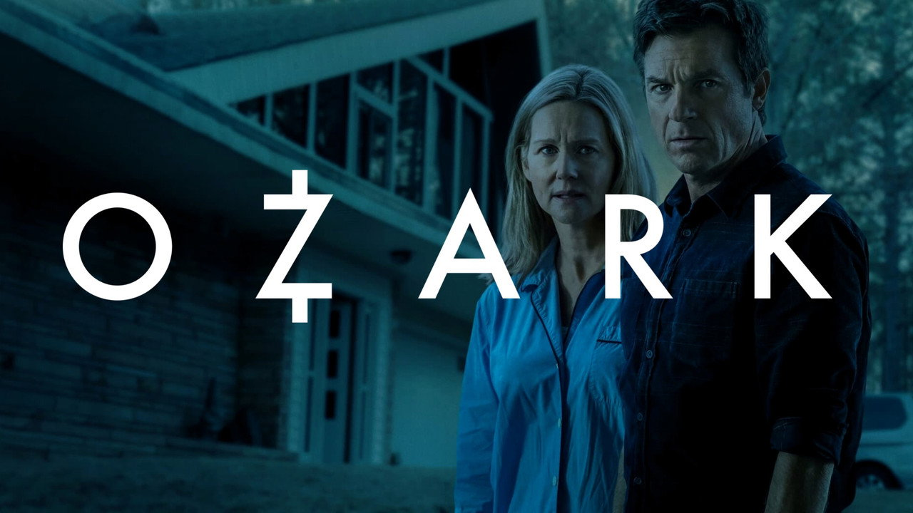

Byrde 一家与 FBI、卡特尔达成协议全身而退，出席基金会慈善晚宴；回家却发现私家侦探 Mel 闯入家中，Jonah 举起猎枪，黑屏中枪声响起。
五条主线、家族结构、17 条核心关系线与第四季结局。结局部分受上方「防剧透」开关控制。
S1 Marty 承诺五年洗 5 亿美元，买下 Blue Cat 酒吧、脱衣舞俱乐部；S2 赌场船密苏里贝勒号落地；S3 赌场开业，规模翻倍；S4 赌场成为 FBI 与卡特尔争夺的焦点，最后靠基金会慈善晚宴洗白上岸。
S1 Wendy 出轨、夫妻濒临破裂；S2 两人联手灭口 Cade；S3 Ben 之死让 Wendy 与 Ruth 决裂；S4 外公 Nathan 要带走孩子，夫妻为夺回孩子不择手段，终集一家人又站到了一起。
S1 Ruth 偷 Byrde 的钱，被 Marty 收服当助手；S2 父亲 Cade 出狱搅局被灭口；S3 她与 Ben 相恋，Ben 被灭口后与 Wendy 决裂；S4 接管赌场、为 Wyatt 报仇枪杀 Javi，终集被 Camila 枪杀。
S2 Helen 登场当集团律师；S3 Omar 入狱、Helen 被 Omar 灭口；S4 侄子 Javi 掌权，枪杀 Darlene 与 Wyatt，Ruth 枪杀 Javi；最后 Camila 接管集团，枪杀 Ruth。
S1 Roy Petty 追查 Marty；S2 Cade 杀死 Roy；S3 Maya 接手调查赌场；S4 Maya 与 Byrde 达成交易。私家侦探 Mel 受 Nathan 雇佣，终集闯入 Byrde 家，黑屏中传来 Jonah 的枪声。
一个本想靠洗钱赎命的中产家庭，越洗越深，最后全家都成了罪犯——只有 Ruth 至死都守着自己的底线，也只有她没能活到最后。
Byrde 一家
Marty Byrde（洗钱操盘手）—— Wendy Byrde（妻子，前竞选公关）
├─ Charlotte Byrde（长女）
├─ Jonah Byrde（幼子，金融天才）
└─ Ben Davis（Wendy 的弟弟；S3 被灭口）
Langmore 家族
Ruth Langmore（Marty 的助手 → 赌场掌舵人）
├─ Cade Langmore（父亲；S2 被灭口）
├─ Wyatt Langmore（堂兄；S4 被 Javi 枪杀）
└─ Three Langmore（堂弟；S4 回归）
Snell 家族
Jacob Snell（海洛因大亨）—— Darlene Snell（妻子；毒杀丈夫后独掌大权）
├─ Wyatt Langmore（Darlene 的恋人）
├─ Zeke（Darlene 收养的婴儿）
├─ Sam Dermody（房产中介，被卷入洗钱）
└─ Rachel Garrison（Blue Cat 老板；S4 与 Ruth 合伙）
Navarro 集团
Omar Navarro（首领）
├─ Camila Elizondro（妹妹；S4 接管集团）
│ └─ Javier “Javi” Elizondro（儿子；S4E8 被 Ruth 枪杀）
├─ Helen Pierce（集团律师；S3 末被 Omar 灭口）
└─ Del（S1 联络人）／Nelson（杀手，执行 Cade 与 Ben 的灭口）
集团权力链：Del（S1）→ Helen（S2–3，Omar 的代言人）→ Omar 入狱后 Javi 掌权（S4）→ Camila 接管（S4 末）。FBI 一线：Roy Petty（S1–2，被 Cade 杀害）→ Trevor Evans → Maya Miller（S3–4）；局外人 Mel Sattem 受 Wendy 父亲 Nathan 雇佣，终集闯入 Byrde 家。
S4E8《The Cousin of Death》：Ruth 在芝加哥枪杀 Javi，为 Wyatt 与 Darlene 报仇。S4E13：Rachel 枪杀前来灭口的杀手 Nelson，Ruth 把 Nelson 埋在新泳池工地。S4E14《A Hard Way to Go》（2022-04-29）：Camila 逼 Clare Shaw 说出杀 Javi 的真相，在 Ruth 家门口枪杀了她；Omar 在转狱途中被 Camila 安排杀害。
Byrde 一家与 FBI、与 Camila 达成协议，全身而退，出席基金会慈善晚宴。回家后发现 Mel 闯入家中，拿到了装有 Ben 骨灰的曲奇罐，要将他们绳之以法——Jonah 举起猎枪，黑屏中枪声响起（普遍解读为 Jonah 打死了 Mel）。一家四口站在血泊与谎言之上，赢了自由，输了灵魂。